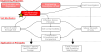
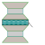
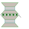
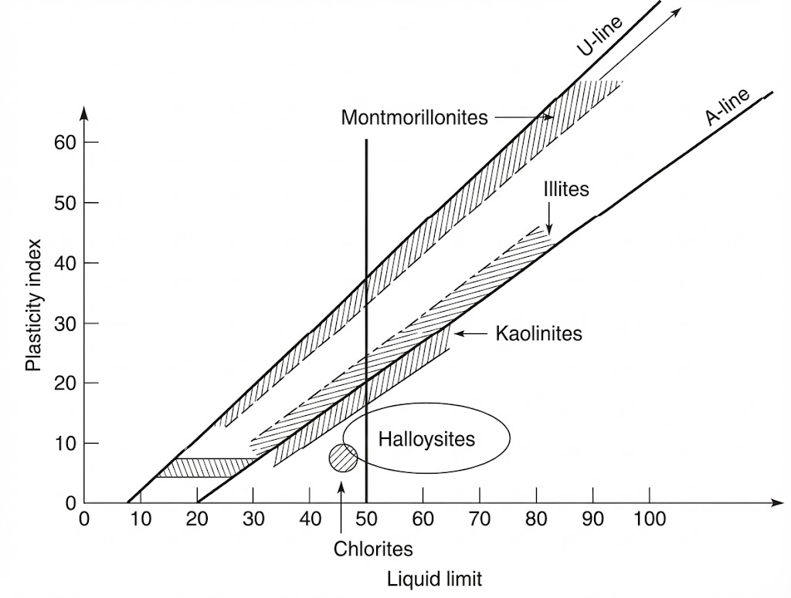
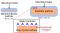
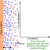
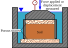
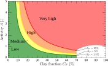
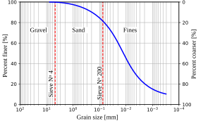
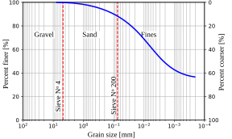

Recap
-
We learned how to calculate the Atterberg Limits
- We learned how to calculate the Plasticity Index and the Liquidity Index
-
We learned how to classify soils according to the USCS.

Contents
- Clay mineralogy
- Clay activity
- Water-clay interaction
- Soil fabric
- Swelling potential
Objectives covered in this lecture
- [O1]: Develop an understanding of soil phase relations, index properties, and their application to soil classification and compaction
After this lecture we will able to:
- Describe the mineralogy of soils and its importance for soil behavior.
- Calculate the activity and specific surface of clays.
- Estimate the swelling potential of soils.
Soil mineral sources
Igneous Rock Composition:
- 60% Feldspars
- 17% Amphiboles
- 12% Quartz
- 4% Micas
- 6% Others
Sand Composition:
- 95% Quartz
- 5% Mica and others
What happen to the other part of the rock mass?
This is the portion of the rock that turns into trough weathering.
Clay Minerals
(plate-like) that dictates clay particle behavior such as how sheets stack together, bonding, and metallic ions in crystal lattice.


Alumina and silica sheets are the of clay particles
1:1 clay minerals
Kaolinite:- 1 silica sheet + 1 alumina sheet
- form between the hydroxils of the alumina sheet and the oxygen of the silica sheet
- Kaolinite results from weathering (hydrolisis and acid leaching) of feldspar and mica in granite rocks
2:1 clay minerals
Smectites
- Most important and common member:
- Small crystal with high attraction to water:
- High
- Can damage light structures
- Form where silica is abundant, pH and electrolyte content are high, and where there are more Mg+2 & Ca+2 than Na+ and K+

Illite
- Most commonly found clay mineral
- 2 silica shees, 1 alumina sheet
- Ioninc bond between layers (K+ ion)
- Similar conditions as smectites required for formation, except K+ must be present.
- Potassium does not allow water to take its place \(\implies\)



Since clay particles are very small, Scanning Electron Microscopy (SEM) needs to be used to visualize them.
How can we asses the mineral content of a clay?
- Plasticity chart
- Calculate the of soils

- Montmorillonites tend to plot just below the U-line
- Illites tend to plot just above the A-line
- Kaolinites tend to plot just below the A-line
Activity of clay minerals
Is the ratio of the plasticity index \(PI\) to the percentage of clay-sized particles (\(< 0.002\) mm) in a soil sample (\(C_F\)).
\( A= PI/ C_F \)
- Measures water in the soil, wihich depends of amount of clay and type of mineral
- Kaolinite absorbs than montmorillonite \(\implies\) Kaolinite is than montmorillonite
| Activity | Activity classification |
|---|---|
| \(< 0.75\) | Inactive |
| 0.75 - 1.25 | Normal |
| \(> 1.25\) | Active |
Participation question 2.7
How does the activity of Illite compares with the activity of montmorillonite?
- Illite's activity > Montmorillonite's activity
- Illite's activity = Montmorillonite's activity
- Illite's activity < Montmorillonite's activity
Typical activity levels of common clay minerals
| Mineral | Activity |
|---|---|
| Na-Montmorillonite | 4-7 |
| Ca-Montmorillonite | 1.5 |
| Illite | 0.5-1.3 |
| Kaolinite | 0.3-0.5 |
| Dehydrated Halloysite | 0.5 |
| Hydrated Halloysite | 0.1 |
| Attapulgite | 0.5-1.2 |
| Allophane | 0.5-1.2 |
| Mica (Muscovite) | 0.2 |
| Calcite | 0.2 |
| Quartz | 0 |
Higher activity means in soil. This means and swelling.
Soil containing exhibit high characteristics, which can cause significant damage to structures built on such soils.
Specific surface
Ratio of the area of a particle, to its mass:
\( SSA= \cfrac{A}{V \rho} \)
Example 2.9
How much does the specific surface of a cubic particle of side \(L\) changes when its side is reduced by half?
Surface area of the original cube
\(A_o=\)
A cube has six faces
Volume and mass of the original cube
\(V_o=\) \(\implies\)
\(m_o=V_o\rho=\)
Original specific surface
\(SSA_o=\dfrac{A_o}{V_o\rho}=\) \(=\)
For the halved particle
\(L_f=\dfrac{L}{2}\), so
\(A_f=6 \left(\dfrac{L}{2} \right)^{2}=\)
and
\(V_f=\left(\dfrac{L}{2}\right)^{3}=\)
\(\left(\tfrac12\right)^{2}=\tfrac14\) but
\(\left(\tfrac12\right)^{3}=\tfrac18\). Both are smaller, but the volume
falls faster.
New specific surface
\(SSA_f=\dfrac{A_f}{V_f\rho}=\)
\(=\)
\(SSA\) is area per unit mass, so
\(\unit{m^2/kg}\). A definition using \(A/V\) instead gives \(\unit{m^{-1}}\) and the
same factor.
By what factor the specific surface changes
\(\dfrac{SSA_f}{SSA_o}= \) =
\(\implies\) the specific surface doubles
In general \(A\propto L^{2}\) and \(V\propto L^{3}\), so \(SSA\propto\dfrac{1}{L}\) for any shape held geometrically similar.
In general \(A\propto L^{2}\) and \(V\propto L^{3}\), so \(SSA\propto\dfrac{1}{L}\) for any shape held geometrically similar.
The smaller the particle size, the the specific surface.
How does specific surface influence the water content in the soil?
- Larger water contents are expected for fine-grained soils than for coarse-grained soils, all other things such as void ratio and soil structure being equal.
- Specific surface is important in concrete and asphalt mix design so you can ensure your are providing sufficient cement paste or asphalt to coat the particles.
- Finer particles offer more surface for physical and chemical interactions.
Water-clay particle interaction
at the surface of clay, water polarity, and dissolved ions create around clay particles.
Water that is tightly bound to the surface of clay particles due to .

Why do water molecules adsorb to the clay?
- The negative charge of clay particles attracts the positive end of water molecules. This is because water is
- Water is held to the clay surface by . This is a very strong bond.
Adsorbed water is a of the clay particle. This water can not removed by .
The diffuse double layer
Is a structure formed around negatively charged clay particles where ions in the surrounding soil solution are attracted tot he surface, balancing the negative charge.
Note: Adsorbed water is a component of the diffuse double layer.

How does water affects the macroscopic behavior of clay?
- Adsorbed water increases the effective volume of clay particles, leading to .
- Kaolinite has less potential to absorb water than montmorillonite, as a result it exhibits less swelling. Montmorillonite are .
- The charge of clay particles and the thickness of the diffuse double layer influence the , affecting the of clay particles.
Soil fabric
Refers to the of soil particles and pores, including their orientation, distribution, and connectivity. For clay particles, fabric is influenced by mineralogy, water content, and inter-particle forces.
Additional notes on the influence of clay fabric on soil behavior
| Structure | Flocculated | Dispersed |
|---|---|---|
| Concept | ||
| Orientation | Edge to face | Parallel |
| Permeability | ||
| Shear strength | ||
| Sketch |
Measuring the swelling potential of soils

Swelling can be measured as a potential for or as the stress required to .
Is the capacity of the soil to swell freely. Is the ratio of the change of volume of the soil over its initial value before water is added.
\( S_P= \cfrac{\Delta V}{V_0} \times 100 \)
Swelling potential is strongly correlated to activity

When is expansion/swelling problematic?
- Sites with thick layers of expansive soils, where soil replacement or improvement is costly.
- Sites with fluctuating moisture conditions, leading to repeated swelling and shrinkage cycles.
- Under light-weight structure/infrastructure such as pavements or 1-2 story buildings.
- For brittle or rigid structures that cannot accommodate soil movement.
Example 2.10
The plot below shows the full grain size distribution of a soil with \(PL=12\%\) and \(LL=43\%\). Estimate: (a) the clay fraction of the soil, (b) the activity of the soil, (c) the swelling potential of the soil, and (d) asses the likely mineral content in this soil.

(a) Clay fraction, off the GSD
Clay-size boundary: \(d=\) \(\unit{mm}\);
Percent finer there: \(C_F=\) \(\%\)
Plasticity index
\(PI=LL-PL=\) \(=\)
\(\%\)
(b) Activity
\(A=\dfrac{PI}{C_F}=\) \(=\)
Search in activity table:\(1.55>1.25\ \implies\) soil is
Search in activity table:\(1.55>1.25\ \implies\) soil is
cc
(c) Swelling potential
Enter the chart at \(C_F=20\ \%\), \(A=1.55\) \(\implies\)
Using Mitchel and Soga (2005)
(d) With \(PI=31\) and \(LL=43\), the point sits in the field
Example 2.11
The plot below shows the full grain size distribution of a soil with \(PI=20\%\) and \(LL=59\%\). Estimate: (a) the clay fraction of the soil, (b) the activity of the soil, (c) the swelling potential of the soil, and (d) asses the likely mineral content of this soil.

(a) Clay fraction, off the GSD
Clay-size boundary: \(d=\) \(\unit{mm}\);
Percent finer there: \(C_F=\) \(\%\)
(b) Activity
\(PI=20\ \%\) is given, so no subtraction is needed:
\(A=\dfrac{PI}{C_F}=\) \(=\)
\(0.41<0.75\ \implies\) the soil is
\(A=\dfrac{PI}{C_F}=\) \(=\)
\(0.41<0.75\ \implies\) the soil is
(c) Swelling potential
Enter the chart at \(C_F=49\ \%\), \(A=0.41\) \(\implies\)
Using Mitchell & Soga (2005)
With \(PI=20\) and \(LL=59\), the point sits the A-line
Below the A-line \(\implies\)
Below the A-line \(\implies\)
Participation question 2.8
What is the dominant mineral of the soil in Example 2.11?
- Kaolinite
- Illite
- Montmorillonite
Watch the Youtube video in the Qr-code for a fun demonstration of soil expansion.